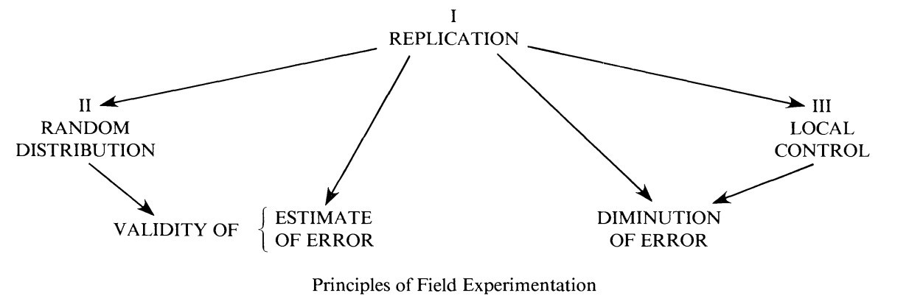
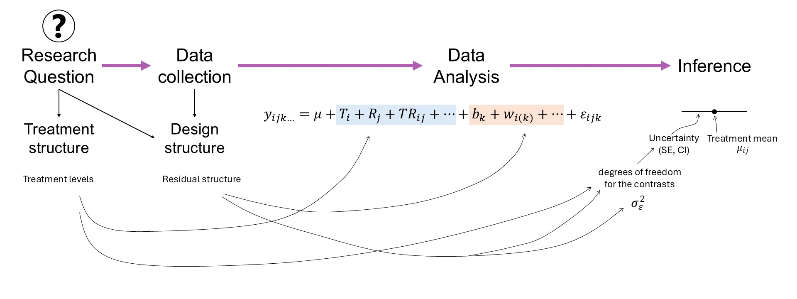

TAPS 2026 National Workshop
2026-04-01
Chapter 1 Welcome to the Design of Experiments Workshop!
1.1 Overview
Review of designed experiments
- Why do we need designed experiments?
- Precision, power, and inference
- Optimal designs
TAPS designed experiments
- TAPS designs
- Integrating new questions into TAPS experiments
1.1.1 Some review of math and notation
On Notation:
- scalars: \(y\), \(\sigma\), \(\beta_0\)
- vectors: \(\mathbf{y} \equiv [y_1, y_2, ..., y_n]'\), \(\boldsymbol{\beta} \equiv [\beta_1, \beta_2, ..., \beta_p]'\), \(\boldsymbol{u}\)
- matrices: \(\mathbf{X}\), \(\Sigma\)
- probability distribution: \(y \sim N(0, \sigma^2)\), \(\mathbf{y} \sim N(\boldsymbol{0}, \sigma^2\mathbf{I})\).
On Stat models
Typically we write \(\mathbf{y} = \mathbf{X}\boldsymbol{\beta} + \boldsymbol\varepsilon\).
- Here, \(\mathbf{y}\) is the vector of the response data, \(\mathbf{X}\) is the design matrix with the predictors, and \(\boldsymbol{\beta}\) is a vector with the effects of those predictors.
- The residuals are typically \(\varepsilon_i \sim N(0, \sigma^2)\).
- You will see \(\mathbf{X}^\top \mathbf{X}\) a lot because it is related to the estimation of \(\sigma^2\) and thus, affects all inference. What does it do?
The result is a square matrix where the number of rows and columns equals the number of predictors (i.e., treatments).
- The diagonal indicates the sum of squares of that predictor.
- The off-diagonal are unscaled versions of correlations between predictors.
1.2 Why do we need designed experiments?
- Golden rules: replication, randomization, local control

Figure 1.1: Fisher’s diagram ‘The Principles of Field Experimentation’. Figure 1 in Preece (1990)
1.3 Precision, power, and inference
The most common model we use can be generally described as
\[y_{i} \sim N(\mu_i, \sigma^2),\] where \(y_{i}\) is the \(i\)th observation with expected value \(\mu_i\) and variance \(\sigma^2\). Generally speaking, we can say \(\boldsymbol\mu = \mathbf{X} \boldsymbol{\beta}\), where \(\mathbf{X}\) is the design matrix (i.e., contains info on all treatments, etc) and \(\boldsymbol{\beta}\) is a vector containing all parameters.
The assumptions we make are
- normality,
- independence,
- constant variance.
A few properties arise as a consequence:
- \(\hat{\boldsymbol{\beta}}\) is an unbiased estimator of \(\boldsymbol{\beta}\)
- \(\hat{\boldsymbol{\beta}}\) is also the unbiased estimator with the smallest variance.
- Precision of the estimates: \(Var(\hat{\boldsymbol{\beta}}) = \frac{\sigma^2}{\mathbf{X}^\top \mathbf{X}}\)
- Standard error of the estimates: \(se(\hat{\boldsymbol{\beta}}) = \sqrt{\frac{\sigma^2}{\mathbf{X}^\top \mathbf{X}}}\)
- Also, looking directly at treatment means \(\mu_j\): \(se(\hat{\mu_j}) =\sqrt\frac{\sigma^2}{r}\), where \(r\) is the number of repetitions.
- Variance of \(\hat{y}\): \(Var(\hat{y}) = \sigma^2 \mathbf{X} (\mathbf{X}^\top \mathbf{X})^{-1} \mathbf{X}^\top\)
- See ‘Review’ above to understand what \(\mathbf{X}^\top \mathbf{X}\) does.
1.3.0.1 Inference
- What in the model were we interested about?
- A confidence interval of \(\hat{\boldsymbol{\beta}}\): \(CI_{95\%\ \hat{\boldsymbol{\beta}}} = \hat{\boldsymbol{\beta}} \pm t_{1-\alpha/2, df} \cdot se(\hat{\boldsymbol{\beta}})\)
- What is the most accurate confidence interval?
- What is the best confidence interval?

Figure 1.2: Mindmap: experiment design and data analysis in the context of a research question.
1.3.0.2 Precision
We wish to maximize the information about the estimates: this means having a narrow range of values where we have high confidence contain the true value.
Recall:
\[CI_{95\%\ \hat{\beta_j}} = \hat{\beta_j} \pm t_{1-\alpha/2, df} \cdot se(\hat{\beta_j}).\]
What happens when we increase the number of observations:
- \(t_{1-\alpha/2,\ df_1} \rightarrow t_{1-\alpha/2,\ df_2}\)
- \(se(\hat{\beta_j}) = \sqrt{\frac{\sigma^2}{(\mathbf{X}^\top \mathbf{X})^{-1}_{jj}}} = \sqrt{\frac{\sigma^2}{n\cdot s^2_x}}\)
- Discuss increasing \(r\) versus increasing \(J\) (i.e., total number of treatments).
1.3.0.3 Power
- Statistical power is directly connected to hypothesis tests.
- Hypothesis tests are directly connected to the standard error of the estimates.
Strategies to increase power
Elements of ANOVA
| Source | df | SS | MS | EMS |
|---|---|---|---|---|
| Block | \(b-1\) | \[\sigma^2_{\varepsilon}+g\sigma^2_w+tg\sigma^2_d\] | ||
| Fungicide | \(t-1\) | \(SS_{F}\) | \(\frac{SS_{F}}{b-1}\) | \[\sigma^2_{\varepsilon}+g\sigma^2_w+\phi^2(\alpha)\] |
| Error(whole plot) | \((b-1)(t-1)\) | \[\sigma^2_{\varepsilon}+g\sigma^2_w\] | ||
| Genotype | \(g-1\) | \(SS_{G}\) | \(\frac{SS_{G}}{g-1}\) | \[\sigma^2_{\varepsilon}+\phi^2(\gamma)\] |
| \(T \times G\) | \((t-1)(g-1)\) | \(SS_{F \times G}\) | \(\frac{SS_{F \times G}}{(t-1)(g-1)}\) | \[\sigma^2_{\varepsilon}+\phi^2(\alpha \gamma)\] |
| Error(split plot) | \(t(b-1)(g-1)\) | \(SSE\) | \(\frac{SSE}{t(b-1)(g-1)}\) | \[\sigma^2_{\varepsilon}\] |
| Df | Sum Sq | Mean Sq | F value | Pr(>F) | |
|---|---|---|---|---|---|
| treatment | 2 | 17.28135 | 8.640673 | 1.872832 | 0.2333563 |
| Residuals | 6 | 27.68217 | 4.613695 | NA | NA |
| Df | Sum Sq | Mean Sq | F value | Pr(>F) | |
|---|---|---|---|---|---|
| treatment | 2 | 87.55746 | 43.778731 | 8.26395 | 0.0028439 |
| Residuals | 18 | 95.35599 | 5.297555 | NA | NA |
| Df | Sum Sq | Mean Sq | F value | Pr(>F) | |
|---|---|---|---|---|---|
| treatment | 6 | 72.17677 | 12.02946 | 2.955068 | 0.0444459 |
| Residuals | 14 | 56.99106 | 4.07079 | NA | NA |
1.3.1 Blocks
Blocks (or local control) are included to increase precision –> increase power.
- How are blocks applied nowadays?
- What does ‘convenience blocking’ generate? See Stroup (2002).
Incomplete Block Designs
- More likely to recover spatial variability because they’re smaller.
ibdR package [link]
1.4 Optimal designs
Considering the items above, we can confidently say that our design affects \(\mathbf{X}\) and thus, precision, power, and inference.
There is a big body of literature studying the different designs that optimize different outcomes (e.g., precision, power, inference, etc.).
Optimality criteria summarize how good a design is in a single number. Optimal designs just optimize those criteria.
1.4.1 Some optimality criteria with emphasis on estimation
D-optimality
- Perhaps the most common in field experiments.
- Emphasis on the quality of the parameter estimates.
- Minimize \(({\mathbf{X}^\top \mathbf{X}})^{-1}\) (i.e., maximize the determinant of the information matrix \({\mathbf{X}^\top \mathbf{X}}\)).
- Maximizes the differential Shannon information content of the parameter estimates.
C-optimality
- Minimizes the variance of a predetermined linear combination of parameters.
1.5 TAPS designed experiments
Designed experiments in TAPS are typically arranged in a randomized complete block design (RCBD).

Figure 1.3: Schematic representation of a randomized complete block design.
Some TAPS designed experiments are arranged in a split-plot design.

Figure 1.4: Schematic representation of a split-plot design randomized complete block arrangement.